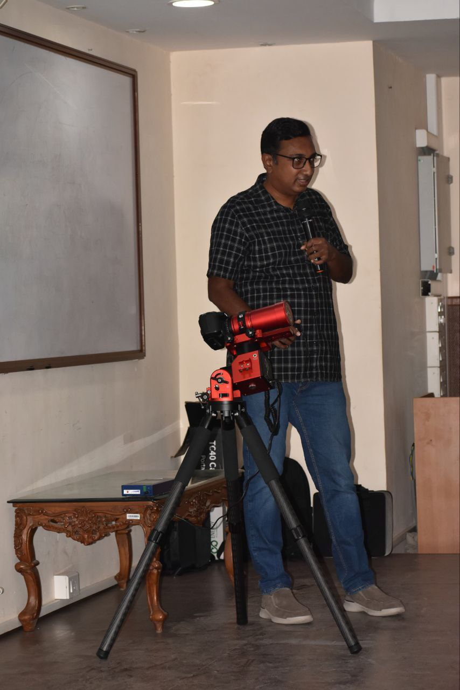
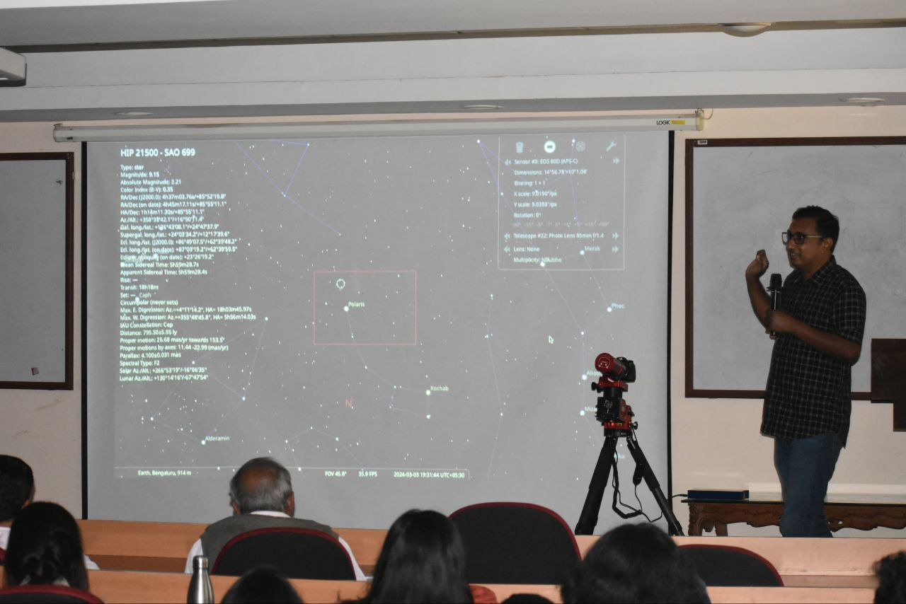
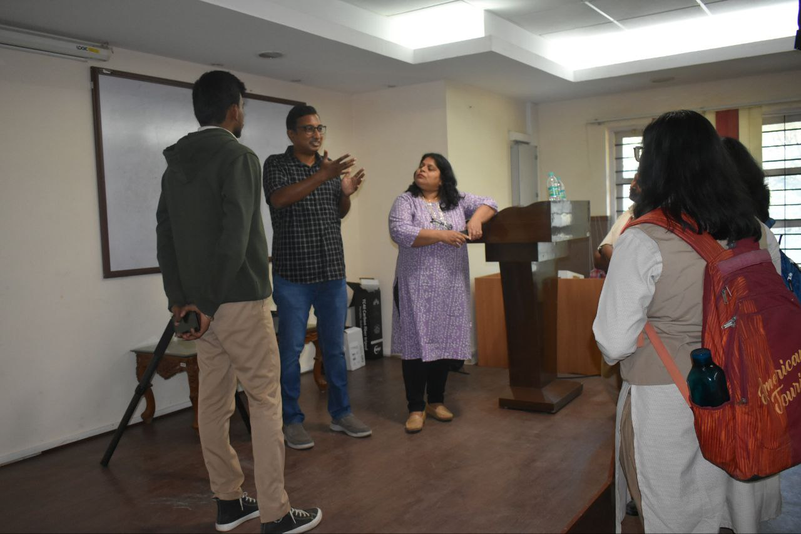
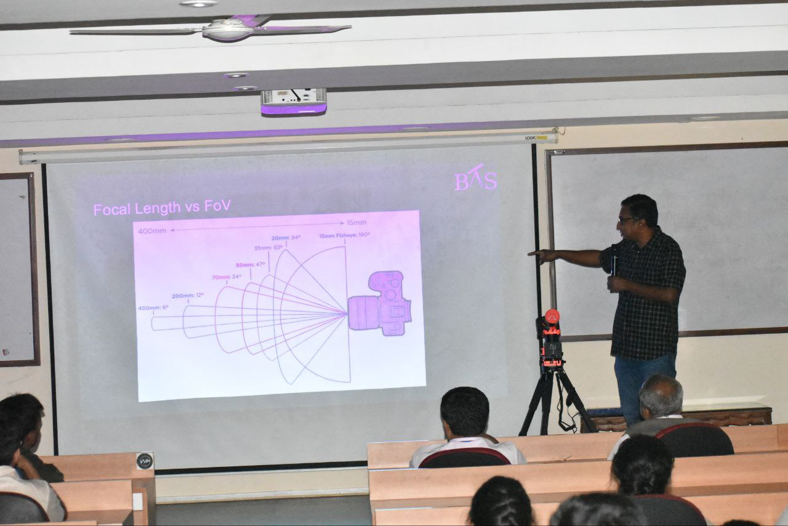
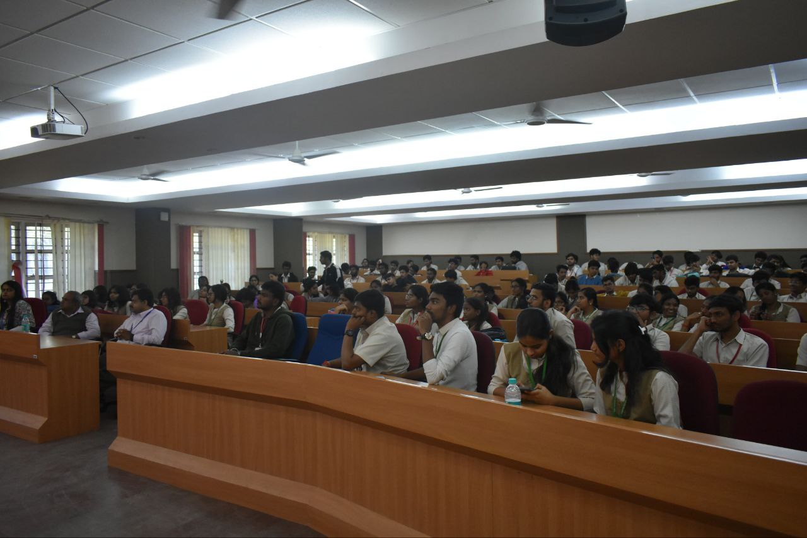

BAS talk for astroimaging at Amrita University
BAS Astrophotography talk at Amrita University,Kasavanahalli
This event was conducted by BAS member Chakravathy. Following are pictures from the event. Following are the images from the program.




